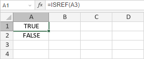
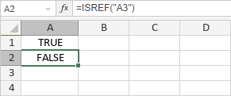

ISREF funkcija
ISREF funkcija je jedna od informacionih funkcija. Koristi se za proveru da li je vrednost validna referenca na ćeliju.
Sintaksa
ISREF(value)
ISREF funkcija ima sledeći argument:
| Argument | Opis |
|---|---|
| value | Vrednost koju želite da testirate. Vrednost može biti prazna ćelija, greška, logička vrednost, tekst, broj, referenca na ćeliju ili ime koje se odnosi na bilo koju od ovih vrednosti. |
Napomene
Kako primeniti ISREF funkciju.
Primeri
Ako je vrednost validna referenca, funkcija vraća TRUE.

U suprotnom, funkcija vraća FALSE.
